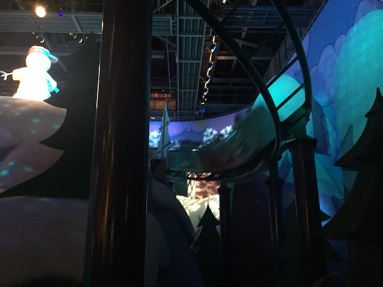

| |

Snoopy's Great Race Review

For today's review, we'll be going back in time to my visit to Universal Studios Japan to review their kiddy coaster. The one that isn't insanely popular because of Harry Potter. The one that no longer exists. Snoopy's Great Race. So yeah. This one instead was themed to the Peanuts characters. And I have to admit. This was unquestionably one of the better kiddy coasters. Not only because it was pretty well themed for a kiddy coaster, but also the coaster itself was surprisingly good. OK. Not great, but it surprisingly had a decent amount of speed and laterals for a kiddy coaster. So we hopped in the cars, and off we went! We rolled around a turn, climbed up the lifthill. We went down a small curved drop, got a nice view of Charlie Brown on a mountain, and with the projection of snowflakes on the wall. Went over a small hill, CRASHED right through the wall. Went around a curve that surprisingly has some laterals. Went into a small helix. And hey, guess who was in the center. Snoopy!!! And he filmed us going through the helix. Looks like Snoopy wanted some good shots too. Actually, this was the on-ride photo. Very clever way of putting that there Universal Studios Japan. Went through what was supposed to be a brake run, but we didn't slow down. Waved hello to Peppermint Patty, went through a turn, and into the brake run. I know it's weird to say this, but this ride actually reminded me of Patriot @ Castles 'N' Coasters, only with MUCH better theming. I'm not sure why this is more agressive than most kiddy coasters. Maybe the fact that it was made by a Japanese manufacter and they don't give a crap. Anyways, this was a fun ride. I may not miss it since it was still a kiddy coaster. But it was one of the better ones and I will admit that I'm glad I got to ride it once. And honestly, not just for credit whore reasons.
4/10
Location: Universal Studios Japan
Opened: 2001
Died: 2020
Built by: Senyo Kogyo
Last Ridden: October 29, 2018
Snoopy's Great Race Photos

Home
|